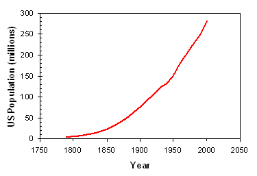
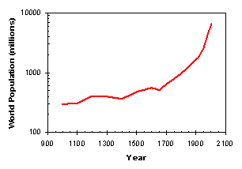
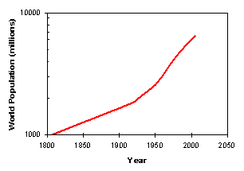

February 2, 2006 (updated slightly on October 31, 2011)
When the first U.S. census was taken in 1790, the population was less than 4 million (slaves and Native Americans were not counted). A count of the population has been taken every ten years since then (called the decennial census), as mandated by the U.S. Constitution. While the constitutional purpose of the census is for the apportionment of members of the House of Representatives (though in Texas we sometimes redistrict without the need for new census data), this population data has become invaluable for analysis of societal and economic trends.

Looking at the data, some interesting population growth statistics become evident. In the first 100 years of our country, population grew robustly at about 3% per year (the population was doubling every 23 years or so). The Civil War robbed the U.S. of about 1.5% of its population over a four year period, but the impact of this war on population was more lasting. After the Civil War, the population growth of the U.S. slowed to a little over 2%, tapering off to 2% by the turn of the century, and finally dropping to 1.5% by World War I. The depression provided the next major jolt to growth rates. The population grew an anemic 0.7% per year during the 1930s. Economic recovery was accompanied by a recovery in population, and the so-called “baby boom” resulted in 1.7% annual population through the 1950s. It is interesting that this “boom” would have been considered slow growth at any time before 1929. After the baby boom, growth in the U.S. has been steady at 0.9– 1.2% per year.
In 2006, the U.S. population reached 300 million, growing at a fairly constant 1% per year. We are now averaging about 4.1 million births per year, and 2.4 million deaths. Net migration into the country is about 1.2 million (or about 40% of our population growth).
The world population has even more interesting trends. In my lifetime (I was born in 1960) the world population has more than doubled. The graph below (on a logarithmic scale so that a change in slope represents a change in the percent growth rates) shows how growth rates for world population have changed dramatically.

Before 1000 AD, the average annual population growth rate was a very low (and very approximate) 0.05%. From 1000 to 1750, the average annual population growth rate was higher but still low at 0.13%. That translates into a doubling of the world population in about 500 years. From 1750 to 1900, the industrial revolution coupled with previous European exploration enabled dramatically higher growth rates, about 0.5% per year. World population now doubled in about 140 years. In the 20 th century, thanks to industrialization of agriculture and improvements in modern medicine, the average annual population growth rate was 1.3%, allowing world population to double every 50 years or so. The changes within the 20 th century are interesting as well. The century began with a growth rate of 0.5% per year, then accelerated to 1% after World War I. The 1% growth rate stayed stable through World War II, then skyrocketed to 2% during the 1960s. At a 2% annual growth rate, the population would double every 35 years!
By 1970, watchers of world population trends were understandably worried (panicked even). Growths rates were high and accelerating. This wasn’t exponential (that would imply a constant percent change in population each year), but super-exponential growth – the rate for growth was growing. Even if the growth rate stayed at 2%, world population would have reached 7.4 billion by 2005, 11 billion by 2025, and 18 billion by 2050. If the growth rate continued to accelerate…. It seemed that the Malthusian catastrophe was finally upon us (at least that was the conclusion of Paul Ehrlich’s 1968 book The Population Bomb). In this scenario, geometric growth (the same as exponential growth) will continue or accelerate until limited (in a harsh and miserable way) by food or other resources.
Fortunately, the 1960s represented the peak in growth rates. They’ve been dropping every decade since then, and the average annual growth rate was just 1.1% over the last few years. We will reach a population of 7 billion sometime in late 2011 or early 2012. Of course, that growth rate is still high, but it pushes out the possibility of staggering population levels by many decades. The hope now is that rates of population growth will continue to slow. Some predictions show growth rates dropping below 0.5% in the next 40 years, with world population stabilizing in the 10 – 12 billion range by the end of this century. But the truth is, we don’t know.
By the way, have you ever wondered how many people have ever lived on Earth? I certainly have, and so has Carl Haub (“How Many People Have Ever Lived on Earth?”, Population Today, November/December 2002). He estimates about 100 billion, but of course that is a very rough number. But based on this estimate, today’s population represents about 7% of the total number of people who have ever lived – much less than the 50% number that I have heard bantered about in barroom conversations. It seems every generation overestimates its own importance in world history.
Accompanying Data
Online References:
http://www.census.gov/population/international/
http://en.wikipedia.org/wiki/Malthusian_catastrophe
Chris Mack is a writer in Austin, Texas.